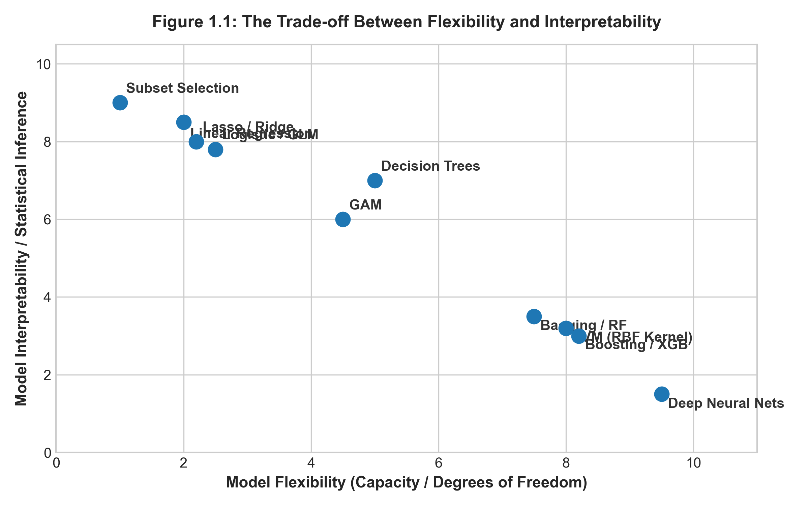

1 統計學習概論與思維典範
1.1 本章導讀
在正式進入各類繁複的演算法之前，我們必須先釐清一個根本性的問題：何謂「統計學習」（Statistical Learning）？它與傳統統計推論、現代計算機科學主導的「機器學習」有何界限與共融之處？
本章將從數學形式出發，嚴格定義統計學習的基本框架，剖析「預測」與「推論」的本質差異，並引入統計大師 Leo Breiman 提出的「資料科學雙文化」哲學。我們將系統展示模型彈性與可解釋性之間的權衡光譜，探討機器學習的底層公理——「歸納偏好」（Inductive Bias）與「沒有免費午餐定理」（No Free Lunch Theorem），為全書奠定嚴謹的哲學與認知基礎。
1.2 1.1 統計學習的數學框架
在統計學習的標準設定中，我們假設觀測到一組輸入特徵（Features / Predictors / Independent Variables）向量 \boldsymbol{X} = (X_1, X_2, \dots, X_p)^\top \in \mathbb{R}^p，以及一個對應的目標變數（Target / Response / Dependent Variable）Y \in \mathbb{R}。
我們假設自然界生成資料的真實機制可以形式化表示為： Y = f(\boldsymbol{X}) + \epsilon \tag{1.1}
其中： 1. f: \mathbb{R}^p \to \mathbb{R} 為未知的真實固定函數（Fixed Unknown Function），它代表了系統性的規律與知識。 2. \epsilon 為隨機誤差項（Random Error Term），獨立於 \boldsymbol{X}，且滿足期望值為零，即 \mathbb{E}[\epsilon] = 0，變異數為 \mathrm{Var}(\epsilon) = \sigma_\epsilon^2。
統計學習的核心任務，就是藉由一組觀測到的訓練樣本資料集 \mathcal{D} = \{(\boldsymbol{x}_1, y_1), (\boldsymbol{x}_2, y_2), \dots, (\boldsymbol{x}_n, y_n)\}，透過特定的統計演算法，估計出一個未知函數 f 的逼近函數，記為 \hat{f}。
1.3 1.2 預測、推論與誤差分解
建構估計函數 \hat{f} 通常服務於兩大目標：預測（Prediction） 與 統計推論（Inference）。
1.3.1 1.2.1 可約化誤差與不可約化誤差
當我們使用 \hat{Y} = \hat{f}(\boldsymbol{X}) 來預測 Y 時，在給定輸入 \boldsymbol{X} 的條件下，預測值的均方誤差（Mean Squared Error, MSE）可以進行精確的數學分解：
\begin{aligned} \mathbb{E}\left[(Y - \hat{Y})^2 \;\middle|\; \boldsymbol{X}\right] &= \mathbb{E}\left[\left(f(\boldsymbol{X}) + \epsilon - \hat{f}(\boldsymbol{X})\right)^2 \;\middle|\; \boldsymbol{X}\right] \\ &= \mathbb{E}\left[\left((f(\boldsymbol{X}) - \hat{f}(\boldsymbol{X})) + \epsilon\right)^2 \;\middle|\; \boldsymbol{X}\right] \\ &= \mathbb{E}\left[(f(\boldsymbol{X}) - \hat{f}(\boldsymbol{X}))^2 \;\middle|\; \boldsymbol{X}\right] + 2\,\mathbb{E}\left[(f(\boldsymbol{X}) - \hat{f}(\boldsymbol{X}))\epsilon \;\middle|\; \boldsymbol{X}\right] + \mathbb{E}\left[\epsilon^2 \;\middle|\; \boldsymbol{X}\right] \end{aligned}
由於誤差項 \epsilon 與 \boldsymbol{X} 相互獨立，且 \mathbb{E}[\epsilon] = 0，中間的交叉項期望值為零： \mathbb{E}\left[(f(\boldsymbol{X}) - \hat{f}(\boldsymbol{X}))\epsilon \;\middle|\; \boldsymbol{X}\right] = (f(\boldsymbol{X}) - \hat{f}(\boldsymbol{X}))\,\mathbb{E}[\epsilon] = 0
因此，上式簡化為經典的誤差分解定理： \mathbb{E}\left[(Y - \hat{Y})^2 \;\middle|\; \boldsymbol{X}\right] = \underbrace{\left[f(\boldsymbol{X}) - \hat{f}(\boldsymbol{X})\right]^2}_{\text{可約化誤差 (Reducible Error)}} + \underbrace{\sigma_\epsilon^2}_{\text{不可約化誤差 (Irreducible Error)}} \tag{1.2}
- 可約化誤差（Reducible Error）：源於估計函數 \hat{f} 與真實函數 f 之間的偏離。這項誤差可透過挑選更優良的模型、採納更強的演算法、或是增加樣本量來不斷壓低。
- 不可約化誤差（Irreducible Error）：源自隨機擾動 \epsilon，例如未被記錄的隱藏變數、量測儀器的固有雜訊或系統隨機性。\sigma_\epsilon^2 是任何預測模型均無法突破的理論誤差下限（Theoretical Lower Bound）。
1.3.2 1.2.2 模型彈性與可解釋性的權衡
在機器學習與統計建模中，不存在一個在所有情境下全面勝出的「萬能模型」。模型的彈性（Flexibility / Capacity）與其可解釋性（Interpretability）往往呈現不可調和的反比關係，如 Figure 1.1 所示：

從 Figure 1.1 可以清晰地梳理出統計學習演算法的家族光譜： 1. 高可解釋性、低彈性陣營（如 Lasso、線性迴歸、單純貝氏）： * 特性：對函數形態施加了嚴格的線性或獨立性假設。 * 優勢：參數估計具有封閉形式或高度凸性，計算開銷小，參數符號與數值具有明確的物理與經濟學意義，易於進行假設檢定與政策制定。 * 缺點：若真實系統存在複雜非線性曲率，模型將產生嚴重的系統性欠配適（Underfitting）。 2. 中度平衡陣營（如廣義加法模型 GAM、迴歸樣條 Splines、單一決策樹 CART）： * 特性：允許特徵呈現非線性平滑形態，同時保留加性結構或直觀的若-則（If-Then）規則。 3. 高彈性、低可解釋性陣營（如隨機森林、XGBoost、支援向量機 SVM、深層神經網路）： * 特性：幾乎不對函數形狀作人為限制，能自由逼近任意高維非線性超曲面。 * 優勢：預測均方誤差往往逼近理論下界，在各類預測競賽中表現極其優異。 * 缺點：內部數百萬個參數交織成複雜黑盒子（Black-Box），極易在訓練樣本有限時捕捉偶然雜訊而過度配適（Overfitting）。
1.4 1.3 資料建模的雙文化（Two Cultures）
統計學家 Leo Breiman 於 2001 年在 Statistical Science 發表了劃時代的論文《Statistical Modeling: The Two Cultures》，指出分析資料的學者本質上分裂為兩大文化陣營：
┌──────────────────────────────────────────────┐
│ 自然界黑盒子 (Nature) │
│ 輸入 X ───────────► 輸出 Y │
└──────────────────────┬───────────────────────┘
│
┌───────────────────────┴───────────────────────┐
▼ ▼
【第一種：資料建模文化】 【第二種：演算法建模文化】
(Data Modeling Culture) (Algorithmic Modeling Culture)
- 代表群體：傳統統計學界 - 代表群體：計算機科學與機器學習界
- 核心信念：自然遵循特定的隨機分佈 - 核心信念：自然是複雜不可知的黑盒子
- 代表模型：線性迴歸、Cox模型、GLM - 代表模型：決策樹、SVM、神經網路
- 核心追求：檢驗參數、估計信心區間 - 核心追求：未知測試集上的極限預測能力本書的立足點是雙文化的融合：我們既尊重資料背後的隨機生成機制與假設檢定，也擁抱演算法對高維非線性結構的強大逼近能力。
1.5 1.4 歸納偏好與沒有免費午餐定理（NFL）
任何機器學習演算法若要具備從有限訓練樣本推廣至未知樣本的「一般化（Generalization）能力」，就必須具備某種前置假設，這種假設稱為歸納偏好（Inductive Bias）。例如： * 線性迴歸的歸納偏好是：特徵與目標之間的關係由超平面主導。 * K 最近鄰（KNN）的歸納偏好是：在特徵空間中相鄰的樣本具有相似的輸出。
如果完全不給定任何歸納偏好，演算法的表現將受到著名的沒有免費午餐定理（No Free Lunch Theorem, NFL）限制。
1.5.1 沒有免費午餐定理（NFL）的精確推導
為展示學術嚴謹性，我們依據周志華（2016）的表述，給出離散設定下的 NFL 形式化證明。
假設樣本空間為 \mathcal{X}，標籤空間為二元分類 \mathcal{Y} = \{0, 1\}。真實目標函數為 f: \mathcal{X} \to \mathcal{Y}。假設所有可能存在的目標函數集合為 \mathcal{F}，其基數為 |\mathcal{F}| = 2^{|\mathcal{X}|}。
設有兩個相異的學習演算法 \mathfrak{A}_a 與 \mathfrak{A}_b。給定訓練集 \mathcal{D}，演算法 \mathfrak{A}_a 輸出的假設函數為 h_a。在所有可能的真實函數分佈均勻的前提下（即每個 f 出現的機率均為 1/|\mathcal{F}|），演算法在訓練集以外之樣本空間 \mathcal{X} \setminus \mathcal{D} 上的期望泛化誤差為：
\mathbb{E}_f\left[E_{ote}(\mathfrak{A}_a \mid \mathcal{D})\right] = \sum_{f \in \mathcal{F}} \frac{1}{|\mathcal{F}|} \sum_{\boldsymbol{x} \in \mathcal{X} \setminus \mathcal{D}} \mathbb{I}\left(h_a(\boldsymbol{x}) \neq f(\boldsymbol{x})\right)
其中 \mathbb{I}(\cdot) 為指示函數。將求和順序交換：
\sum_{f \in \mathcal{F}} \sum_{\boldsymbol{x} \in \mathcal{X} \setminus \mathcal{D}} \mathbb{I}\left(h_a(\boldsymbol{x}) \neq f(\boldsymbol{x})\right) = \sum_{\boldsymbol{x} \in \mathcal{X} \setminus \mathcal{D}} \sum_{f \in \mathcal{F}} \mathbb{I}\left(h_a(\boldsymbol{x}) \neq f(\boldsymbol{x})\right)
對於任意固定的未見樣本點 \boldsymbol{x} \in \mathcal{X} \setminus \mathcal{D}，在所有可能的 2^{|\mathcal{X}|} 個函數中，恰好有一半的函數使得 f(\boldsymbol{x}) = 1，另一半使得 f(\boldsymbol{x}) = 0。因此，不論演算法產生的預測值 h_a(\boldsymbol{x}) 究竟是 0 還是 1，在全體可能函數中，恰好有半數與其預測相異：
\sum_{f \in \mathcal{F}} \mathbb{I}\left(h_a(\boldsymbol{x}) \neq f(\boldsymbol{x})\right) = \frac{1}{2} |\mathcal{F}| = \frac{1}{2} 2^{|\mathcal{X}|}
代回期望誤差式：
\mathbb{E}_f\left[E_{ote}(\mathfrak{A}_a \mid \mathcal{D})\right] = \frac{1}{|\mathcal{F}|} \sum_{\boldsymbol{x} \in \mathcal{X} \setminus \mathcal{D}} \frac{1}{2}|\mathcal{F}| = \frac{1}{2} |\mathcal{X} \setminus \mathcal{D}| \tag{1.3}
1.5.1.1 NFL 定理之重大結論：
式 (1.3) 清楚表明，總體期望誤差完全獨立於演算法 \mathfrak{A}_a 的具體結構！ 換言之： \mathbb{E}_f\left[E_{ote}(\mathfrak{A}_a \mid \mathcal{D})\right] \equiv \mathbb{E}_f\left[E_{ote}(\mathfrak{A}_b \mid \mathcal{D})\right]
💡 核心啟示：脫離具體問題的先驗領域知識（Domain Knowledge），去空談「哪一種演算法最強」在數學上是毫無意義的。任何優秀演算法的優勢，必然來自其歸納偏好與特定實際問題結構的高度契合。
1.6 1.5 雙軌實務實驗室：資料生成與模型彈性探索
本節透過合成資料模擬，在 R 語言 與 Python 雙環境中對照實作資料生成、非線性趨勢擬合與過度配適的初探。
# ==============================================================================
# R 實作：統計學習初探與資料生成模擬
# 依賴套件：stats, graphics
# ==============================================================================
set.seed(42)
# 1. 定義真實函數與生成資料
n_samples <- 60
x <- runif(n_samples, min = -1, max = 1)
f_true <- function(x) sin(pi * x) + 0.5 * cos(2 * pi * x)
noise_sigma <- 0.3
y <- f_true(x) + rnorm(n_samples, mean = 0, sd = noise_sigma)
sim_data <- data.frame(x = x, y = y)
# 2. 擬合不同彈性的模型
# 模型 A: 線性迴歸 (低彈性 / 配適不足 Underfitting)
fit_linear <- lm(y ~ x, data = sim_data)
# 模型 B: 3次多項式 (適度彈性 Good Fit)
fit_poly3 <- lm(y ~ poly(x, 3, raw = TRUE), data = sim_data)
# 模型 C: 15次高階多項式 (過高彈性 / 過度配適 Overfitting)
fit_poly15 <- lm(y ~ poly(x, 15, raw = TRUE), data = sim_data)
# 3. 預測網格
x_grid <- seq(-1, 1, length.out = 300)
pred_df <- data.frame(
x = x_grid,
True_f = f_true(x_grid),
Linear = predict(fit_linear, newdata = data.frame(x = x_grid)),
Poly3 = predict(fit_poly3, newdata = data.frame(x = x_grid)),
Poly15 = predict(fit_poly15, newdata = data.frame(x = x_grid))
)
# 4. 計算訓練樣本殘差平方和 (RSS)
rss_calc <- function(fit) sum(residuals(fit)^2)
cat(sprintf("線性迴歸 RSS: %.4f\n", rss_calc(fit_linear)))
cat(sprintf("3階多項式 RSS: %.4f\n", rss_calc(fit_poly3)))
cat(sprintf("15階多項式 RSS: %.4f\n", rss_calc(fit_poly15)))# ==============================================================================
# Python 實作：統計學習初探與資料生成模擬
# 依賴套件：numpy, pandas, scikit-learn
# ==============================================================================
import numpy as np
import pandas as pd
from sklearn.linear_model import LinearRegression
from sklearn.preprocessing import PolynomialFeatures
from sklearn.pipeline import make_pipeline
np.random.seed(42)
# 1. 定義真實函數與生成資料
n_samples = 60
x = np.random.uniform(-1, 1, size=n_samples)
f_true = lambda x: np.sin(np.pi * x) + 0.5 * np.cos(2 * np.pi * x)
noise_sigma = 0.3
y = f_true(x) + np.random.normal(0, noise_sigma, size=n_samples)
X_train = x[:, np.newaxis]
# 2. 擬合不同彈性的模型
# 模型 A: 線性迴歸 (低彈性)
model_linear = LinearRegression().fit(X_train, y)
# 模型 B: 3 次多項式 (適度彈性)
model_poly3 = make_pipeline(PolynomialFeatures(degree=3), LinearRegression()).fit(X_train, y)
# 模型 C: 15 次多項式 (過高彈性 / 過度配適)
model_poly15 = make_pipeline(PolynomialFeatures(degree=15), LinearRegression()).fit(X_train, y)
# 3. 計算訓練均方誤差 (Train MSE)
mse_linear = np.mean((y - model_linear.predict(X_train))**2)
mse_poly3 = np.mean((y - model_poly3.predict(X_train))**2)
mse_poly15 = np.mean((y - model_poly15.predict(X_train))**2)
print(f"線性迴歸 訓練 MSE: {mse_linear:.4f}")
print(f"3階多項式 訓練 MSE: {mse_poly3:.4f}")
print(f"15階多項式 訓練 MSE: {mse_poly15:.4f}")1.7 1.6 課後全方位習題庫（10 題）
1.7.1 一、觀念理解與數學證明（5 題）
- 不可約化誤差之條件期望推導： 在式 (1.2) 的推導中，若假設隨機擾動 \epsilon 的條件變異數隨特徵變更（即異變異數性 \mathrm{Var}(\epsilon \mid \boldsymbol{X}) = \sigma^2(\boldsymbol{X})），重新展開並推導均方誤差的期望分解式，論證不可約化誤差在特徵空間上的局部異質性。
- 奧坎剃刀原則（Occam’s Razor）之資訊論解釋： 統計學習理論常引述「如無必要，勿增實體」。請從最小描述長度原則（Minimum Description Length, MDL）與貝氏模型選擇的角度，論證為什麼在兩個經驗誤差相仿的模型中，結構較簡單的模型往往具備更優的泛化能力。
- 沒有免費午餐定理的前提邊界檢討： NFL 定理假設所有真實目標函數出現的機率均勻相等。試論證：若現實世界中客觀物理規律滿足「光滑性（Smoothness）」或「稀疏性（Sparsity）」先驗（即某些病態劇烈振盪的函數出現機率為零），NFL 定理是否依然成立？
- 監督式 vs 非監督式學習的本質差異： 證明在非監督式學習中，不存在類似式 (1.2) 那樣具有唯一客觀「金標準（Ground Truth）」的泛化誤差指標。這對非監督模型的評估帶來了什麼本質上的挑戰？
- 維度災難（Curse of Dimensionality）幾何推導： 設特徵空間為 p 維單位超立方體 [0, 1]^p，樣本均勻分佈其中。欲在一個子超立方體內捕捉全體樣本的 10\%，計算該子超立方體的邊長 e_p(0.1) = 0.1^{1/p}。當維度分別為 p=1, 2, 10, 100 時，數值是多少？這如何說明高維空間中「局部鄰域」概念的崩塌？
1.7.2 二、程式實作與實務應用（5 題）
- 蒙地卡羅模擬維度災難幾何現象： 使用 Python 或 R 產生 n=1000 筆均勻分佈在 p 維超球體內的樣本點。計算隨維度 p \in [1, 50] 增加時，位於超球體最外層外殼（半徑 r \in [0.9, 1.0]）的樣本所佔比例，驗證高維空間中「所有數據都集中在邊界」的驚人幾何特性。
- 可解釋性與預測力對比實證： 在 Boston 房價或 California Housing 資料集上，分別訓練一個標準線性迴歸與一個深度為 10 的隨機森林模型。比較兩者的測試集 RMSE，並嘗試從隨機森林中直接提取特徵的單調邊際效應，記錄遭遇的黑盒子黑箱障礙。
- 不可約化誤差邊界模擬實驗： 設定真實函數 f(x) = 2x + 1，人工疊加高斯雜訊 \epsilon \sim \mathcal{N}(0, 2^2)（已知 \sigma_\epsilon^2 = 4）。擬合由 1 階到 20 階的多項式模型，在容量為 10,000 的超大獨立測試集上計算測試 MSE，驗證測試 MSE 是否無論如何都無法突破基準線 4.0。
- 資料生成之非線性交互作用模擬： 撰寫程式生成包含兩變數非線性交互項的合成資料：y = x_1 x_2 + \sin(x_1) + \epsilon。比較不含交互項的線性模型、包含一階交互項的線性模型以及樹狀模型的擬合殘差分佈。
- 探索性資料分析（EDA）標準流程實現： 利用真實資料集（如 Auto MPG），撰寫包含特徵相關係數矩陣熱力圖、數值型變數分佈直方圖、箱型圖（Boxplot）檢測離群值以及散佈圖矩陣（Pairplot）的完整自動化 EDA 腳本。